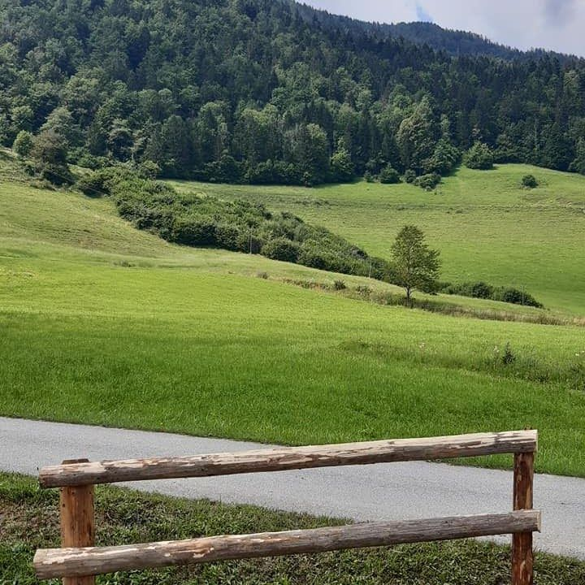
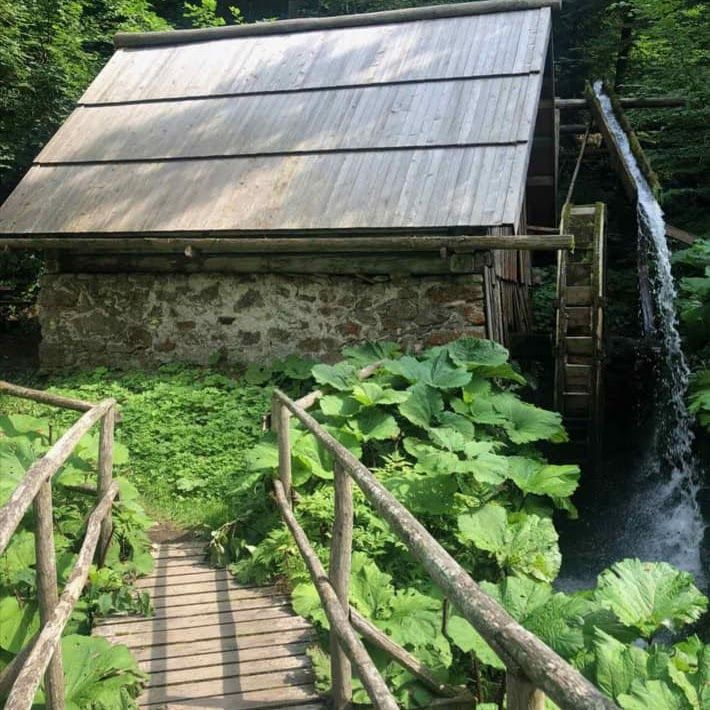
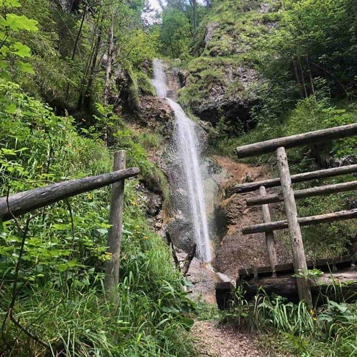
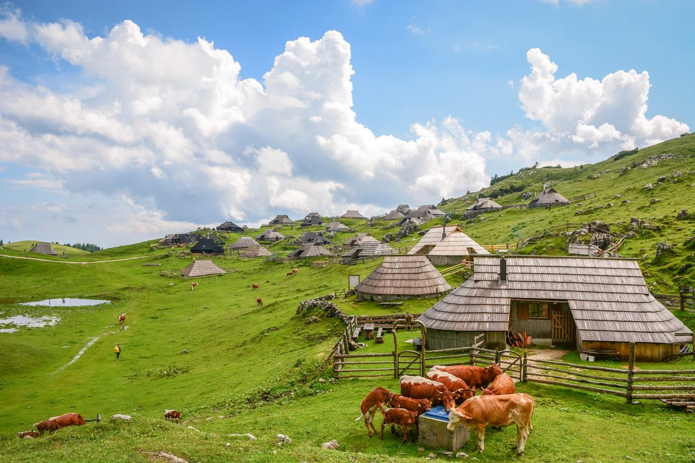

Doživetja v Savinjski dolini
Izbor znamenitosti, izletov in koristnih lokacij v okolici apartmajev. Več na portalu Visit Savinjska. Vprašanja: turizem@kplg-group.com.
Znamenitosti v okolici
Luče
- Luče
- Repov slap
- Soteska Brložnice
- Riherska jelka
- Cerkev sv. Antona Puščavnika
- Žagerski mlin
- Slap Cuc
- Snežna jama
- Dleskovška planota
- Etnološka zbirka Luče
- Igla
- Juvanova hiša
- Jezero pri Jezerniku
- Kapela na Molički planini
- Lučka Bela
- Planina Podvežak
- Raduha
Solčava in Logarska dolina
Ljubno, Gornji Grad, Mozirje
- Ljubno
- Greben Smrekovec–Komen
- Pešpot ob Savinji
- Gornji Grad
- Veliki Rogatec
- Kašna planina
- Menina
- Lepenatka
- Mozirje
- Mozirski gaj
- Golte
Proti Kamniku
Možnosti za dnevni izlet
Razvajanje
Pomembne lokacije
Trgovine, lekarne, zdravnik, bencinski servis
- Petrol Solčava (bencinski servis)
- Petrol Ljubno (bencinski servis)
- Supermarket Tuš Mozirje
- Hipermarket Spar Kamnik
- Trgovina KEA Luče
- Ambulanta Ljubno
- Lekarna Mozirje
Bari in restavracije



